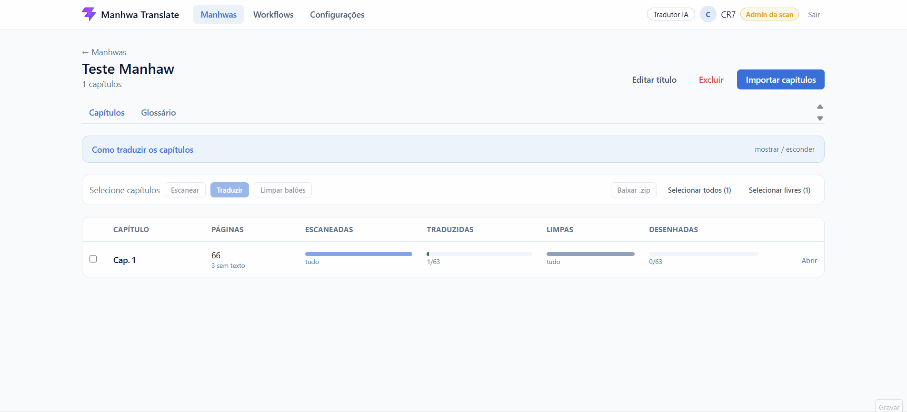

Leitura do texto com IA IA
A IA lê o inglês de cada balão direto da imagem, inclusive letras estilizadas, narração e texto solto na arte.
O Manhwa Translate junta num só lugar tudo o que a scan faz hoje em várias ferramentas: separar páginas, achar os balões, limpar o inglês, traduzir, encaixar o texto, revisar e entregar o capítulo.
Space Cheon Ma 3077, cap. 1, pág. 3: o mesmo balão antes e depois da plataforma.
Cada etapa roda em lote, para vários capítulos de uma vez, e a tela mostra o andamento página por página.
Envie um .zip por capítulo (1.zip, 2.zip…), vários de uma vez. As páginas entram em ordem, prontas para trabalhar.
A plataforma encontra os balões e textos de cada página, separa as páginas sem texto e junta os balões que começam numa página e terminam na outra.
A IA lê o texto em inglês de cada balão, apaga o original, traduz e já desenha a tradução no lugar.
Limpe os balões em lote e escreva a tradução você mesmo, com caixas de texto em cima da página limpa.
Abra cada página para corrigir o texto, mover, girar e redimensionar as caixas, apagar restos de letra e comentar problemas numa área da imagem.
Cada alteração publicada vira uma versão nova da página. A anterior fica no histórico e pode ser restaurada. Páginas podem ser aprovadas antes de sair.
Baixe os capítulos num .zip, com uma pasta por capítulo e as páginas na ordem de leitura.
Gravado com capítulos reais. Escolha uma etapa para ver.

Vários .zip de uma vez: cada arquivo vira um capítulo. A lista mostra o envio e a descompactação de cada um.
A IA lê o inglês de cada balão direto da imagem, inclusive letras estilizadas, narração e texto solto na arte.
Traduz com o contexto do capítulo, separa fala, pensamento e narração e mantém as onomatopeias. Um glossário por série deixa nomes e termos sempre iguais.
Detecta balões e textos em capítulos inteiros, separa as páginas sem texto e trata como um só o balão cortado entre duas páginas.
Apaga o inglês e refaz o fundo, inclusive em cima de desenho, gerando a página limpa onde a tradução é escrita.
Caixas editáveis por cima da página: fonte, tamanho, cor, contorno, alinhamento, entrelinha, rotação livre e redimensionamento pelos cantos.
Mostra o fim da página anterior e o começo da próxima. Ajustar a caixa numa página alinha a cópia dela na outra.
Toda alteração publicada vira uma versão. O histórico guarda todas, e qualquer uma pode ser restaurada.
Marque uma área da página para comentar, apagar restos de letra ou pedir para a IA reler e traduzir de novo só aquele trecho.
Cada scan tem o seu espaço isolado, com admins, redatores, times, permissões por função e registro de quem fez o quê.
As etapas rodam em segundo plano, com andamento página por página, aviso ao terminar e nova tentativa automática quando algo falha.
Capítulos entram por .zip e saem por .zip, com uma pasta por capítulo, traduzidos ou originais.
Quem prefere traduzir à mão usa todo o fluxo sem IA: escanear, limpar, escrever nas caixas, revisar, publicar e exportar.
A plataforma é distribuída de graça. Só a leitura e a tradução com IA são pagas, porque cada uso tem um custo real de processamento.
R$ 0
IA
Você só paga pelas páginas que mandar para a IA. Quem traduz à mão não paga nada.
Dá para misturar: traduzir com IA e revisar à mão, ou usar a IA só nos capítulos com prazo apertado.
A plataforma está em validação. Estas são as perguntas que vão dizer se ela resolve o problema da sua scan.
Como a sua scan traduz um capítulo hoje, e quais ferramentas usa em cada etapa?
Quanto tempo leva um capítulo, do download até a entrega? Qual etapa toma mais tempo?
Vocês trabalhariam com tradução manual na plataforma, com IA, ou misturando os dois?
A tradução da IA, revisada pela equipe, chegaria no nível que vocês publicam?
Tudo grátis e só a IA paga faz sentido para vocês? Quanto pagariam pela IA num capítulo?
O que falta para trocar o fluxo atual por este? Formato de entrega, fontes, algum passo que não aparece aqui?